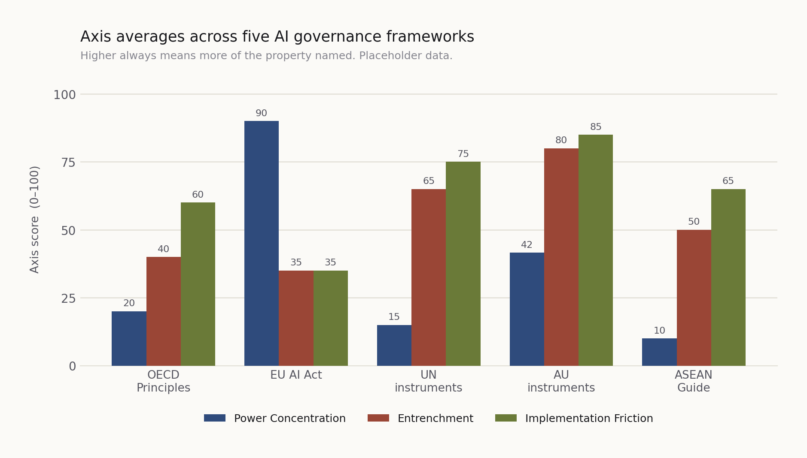
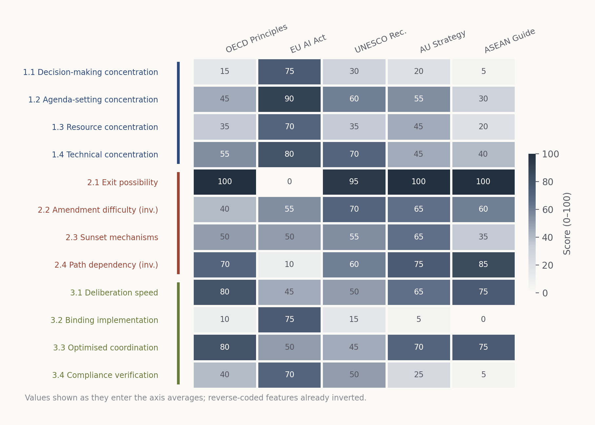
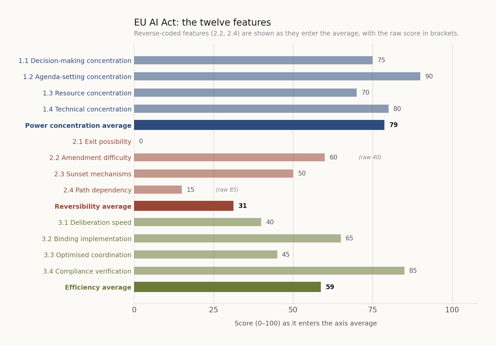

OECD AI Principles
Power conc.38
Reversibility65
Efficiency53
Each framework is coded on the same twelve features. Every number links back to the anchor that produced it, so you can check the reasoning rather than take it on trust.
All five frameworks are now coded against the twelve features. These are a first-pass draft: each cell has a justification and a primary source, but no cell has yet been checked by all three authors, nothing has been coded blind, and no inter-coder reliability testing has been done. Not yet findings — please do not cite until this notice is gone.
Five landmark instruments spanning the spectrum from non-binding guidance to hard law, from universal membership to regional integration, and from purely voluntary to legally enforceable commitment.
The first intergovernmental standard on AI, adopted by the OECD Council by mutual agreement and adhered to by 47 countries including eight non-members. Its influence runs through adoption elsewhere rather than through enforcement. Coded as adopted in 2019; the May 2024 revision is recorded but, under rule 2, does not move a score — it changed the definition of an AI system rather than the instrument's design.
The first comprehensive binding AI law, applying risk-tiered obligations across the single market with penalties for non-compliance and a central AI Office. Coded as adopted. It was substantively amended by the Digital Omnibus on AI, Regulation (EU) 2026/1744, in force 27 July 2026, which deferred the high-risk application deadlines to December 2027 and August 2028 and expanded the AI Office's enforcement powers. Under coding rule 2 that amendment is recorded but does not move a score.
Official Journal text Digital Omnibus amendments Implementation timeline
Adopted by all UNESCO member states in 2021, and the instrument in this pair that carries the operative machinery. Under coding rule 3 it is what gets scored. The Global Digital Compact, agreed within the Pact for the Future in 2024, is recorded as context rather than coded.
The African Union's continental strategy for AI, setting shared priorities across member states without creating binding obligations or an enforcement mechanism. It provides for a five-year implementation plan with objectives targeted for 2030, and calls for an Advisory Board on AI, a regional AI Ethics Board and an expert group on peace and security — none of which it establishes itself.
Regional guidance built on national-level implementation and consensus, with no central body, no obligations and no enforcement — the clearest contrast in the set to the EU approach. It describes itself as a living document to be periodically reviewed, and proposes an ASEAN Working Group on AI Governance that it does not establish. Coded as adopted in February 2024; the January 2025 generative-AI expansion is recorded, not scored.
Each axis runs 0–100, where 100 always means more of the property named. These are the unweighted means of the four features in each axis, with the two reverse-coded features inverted first.
Twelve features, five frameworks. Feature names link to their anchors on the index page. On the two reverse-coded rows, the small arrow shows the value that actually enters the axis average.
| Feature | OECD Principles | EU AI Act | UNESCO Rec. | AU Strategy | ASEAN Guide |
|---|---|---|---|---|---|
| Axis 1 · Power concentration | |||||
| 1.1Decision-making concentration | 15 | 75 | 30 | 20 | 5 |
| 1.2Agenda-setting concentration | 45 | 90 | 60 | 55 | 30 |
| 1.3Resource concentration | 35 | 70 | 35 | 45 | 20 |
| 1.4Technical concentration | 55 | 80 | 70 | 45 | 40 |
| Power concentration | 38 | 79 | 49 | 41 | 24 |
| Axis 2 · Reversibility | |||||
| 2.1Exit possibility | 100 | 0 | 95 | 100 | 100 |
| 2.2Amendment difficulty | 60→40 | 45→55 | 30→70 | 35→65 | 40→60 |
| 2.3Sunset mechanisms | 50 | 50 | 55 | 65 | 35 |
| 2.4Path dependency | 30→70 | 90→10 | 40→60 | 25→75 | 15→85 |
| Reversibility | 65 | 29 | 70 | 76 | 70 |
| Axis 3 · Efficiency | |||||
| 3.1Deliberation speed | 80 | 45 | 50 | 65 | 75 |
| 3.2Binding implementation | 10 | 75 | 15 | 5 | 0 |
| 3.3Optimised coordination | 80 | 50 | 45 | 70 | 75 |
| 3.4Compliance verification | 40 | 70 | 50 | 25 | 5 |
| Efficiency | 53 | 60 | 40 | 41 | 39 |
Power concentration Reversibility Efficiency Bar length under each number shows the score on a 0–100 scale.



All three are generated from the same numbers as the table above, so they cannot disagree with it. If you change a score, regenerate them — or the two will drift apart, which is the most common way an index like this loses a reader's trust.
Balbis, C., Sheikh, P. and Vincendeau, J. M. (2026). AI Governance Design Index, version 2.0, framework scores. Available at https://example.org/frameworks.html
Score changes after publication are recorded in the methodology notes.